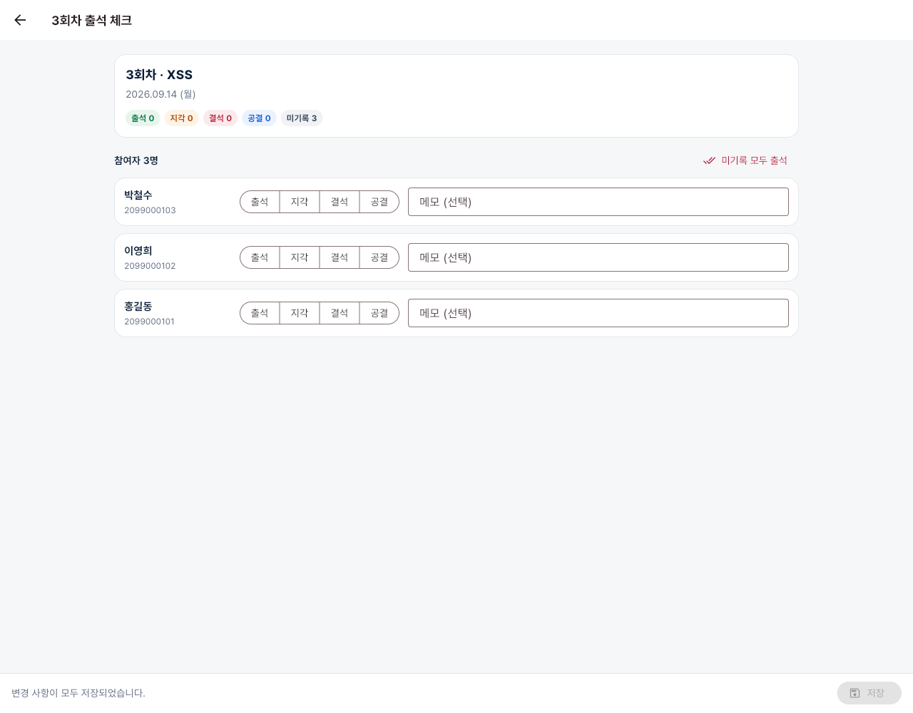
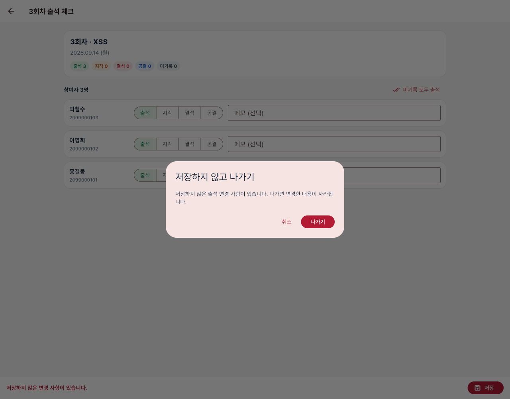
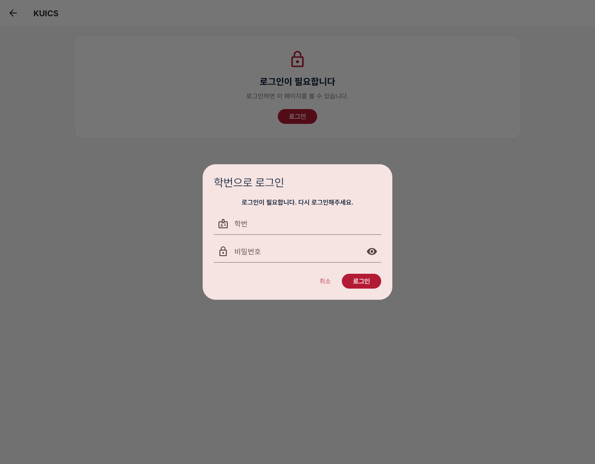
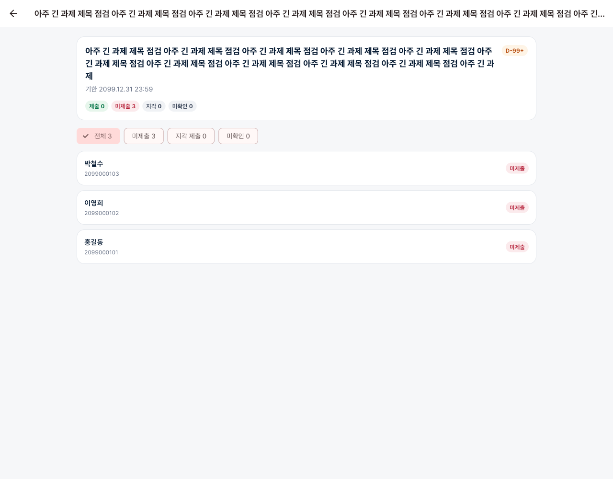
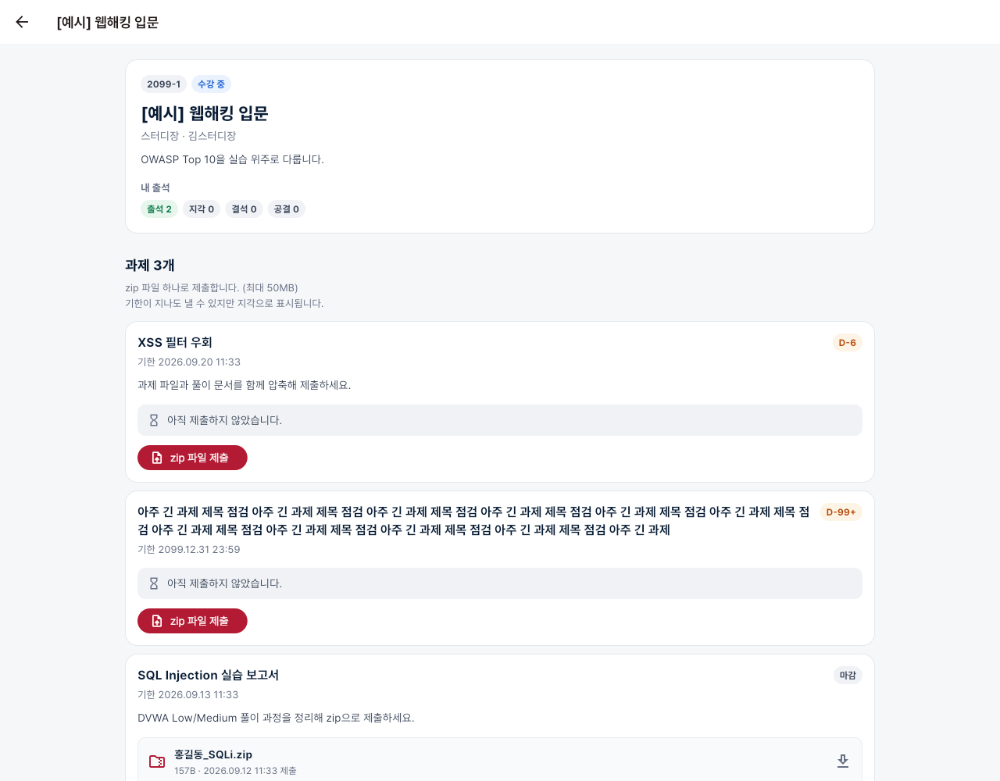
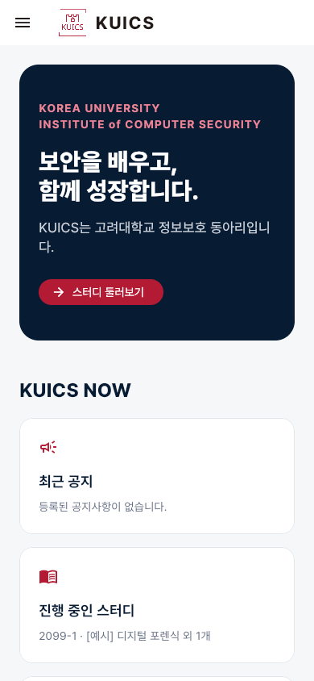
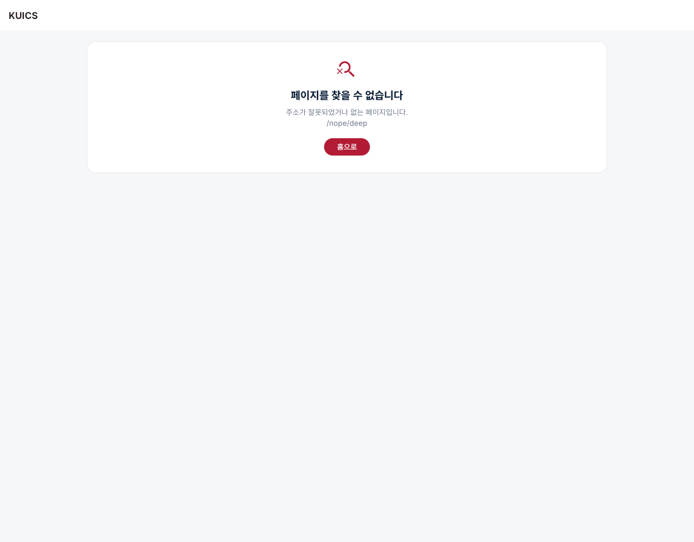

/me로 들어오면 “로그인이 필요합니다”/manage로 들어오면 “볼 수 없는 페이지입니다”| 경로 | 화면 | 조건 |
|---|---|---|
| / · /about · /activity · /contact | 홈 · 소개 · 활동 · 문의 | |
| /study?semester=2099-1 | 스터디 (학기 선택) | |
| /board?category=recruit | 게시판 (분류: notice · recruit) | |
| /me | 마이페이지 | 로그인 |
| /me/studies/1 | 내 스터디 상세 · zip 과제 제출 | 로그인 |
| /manage | 스터디 관리 목록 | 스터디장·운영진 |
| /manage/studies/1 | → /manage/studies/1/participants 로 이동 | |
| /manage/studies/1/participants /manage/studies/1/attendance /manage/studies/1/assignments | 스터디 관리 탭 (탭 전환은 방문 기록에 쌓이지 않음) | 스터디장·운영진 |
| /manage/studies/1/attendance/3 | 회차 출석 체크 | 스터디장·운영진 |
| /manage/studies/1/assignments/1 | 과제 제출 현황 | 스터디장·운영진 |
| 그 밖 · 끝에 / 붙은 주소 | 404 안내 · /study/는 /study로 정리 |
index.html을 돌려줘야 합니다.
nginx try_files와 vercel.json rewrites에 이미 들어 있습니다.
Vercel 배포 뒤 /manage에서 새로고침이 되는지 한 번 확인해주세요.
| 질문 | 처리 | 확인 |
|---|---|---|
| Q-01 | 제출 현황 요약 카드와 참여자 스터디 상세의 스터디·과제 제목을 3줄까지만 보이고 “…” 처리 | 통과 148자 제목 캡처 |
| Q-02 | 휴대폰 폭 서랍에서 로그인에 성공하면 서랍이 닫히고 홈으로 이동 | 통과 /study에서 로그인 → / |
| Q-03 | Pretendard Regular·Bold·ExtraBold를 앱에 포함 | 통과 한글 글꼴 외부 요청 0건 |
| Q-04 | 서버 문구를 “로그인이 필요합니다. 다시 로그인해주세요.”로 변경. 앱은 로그인 상태를 비우고 이 문구가 적힌 로그인 창을 띄움 | 통과 쿠키 삭제 후 화면 이동 |
test/router_test.dart 8개를 추가해 45개 모두 통과했습니다. 다룬 내용:
flutter analyze 문제 0건, flutter build web 성공.replace만으로는 기록이 늘어나서, Router.neglect로 감쌌습니다.
학기 선택과 게시판 분류도 같습니다.
push로 연 화면은 currentConfiguration.uri에 반영되지 않기 때문입니다.
맨 위 화면 기준인 router.state로 판단하도록 바꿨습니다.







/manage/studies/1/attendance 같은 주소를 새로 열었을 때 404가 아닌 앱이 떠야 합니다./board/12 등).
지금 화면이 목록·펼치기 방식이라 필요해질 때 추가하면 됩니다.
{kind=link}
{kind=link}
{kind=link}
{kind=link}
{kind=link}
{kind=link}
{kind=link}